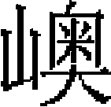

食貨志八
海運
伯顔建海運之議，事便而費省，然卒有不虞，則舉千百人之命投於不測之淵，非若近世舟航之利，可以保萬全而無覆溺之患也。今考其事故，糧則一歲所損壞者多至十餘萬石，少亦四五千石，其軍人、水手之漂溺者可知矣。重利而輕民命，豈仁人之政哉！
至元十九年，初命上海總管羅壁、張瑄、朱清造海船六十艘，募水手，同官軍自海道漕運江南糧四萬六千餘石。明年三月，至直沽，從丞相伯顔之議也。先是，伯顔入臨安，而淮東之地猶爲宋守，乃命張瑄等自崇明州募船，載亡宋庫藏圖籍，由海道運至直沽。又命造鼓兒船，運浙西糧涉江入淮，達於黄河，逆水至中灤旱站，運至淇門，入御河，接運以達京師。後用總管姚焕議，開濟州泗河，自淮入泗，自泗入大清河，由利津河口入海。因海口壅沙，又從東阿旱站運至臨清，入御河，並開膠萊河道，通直沽之海運。至十九年，伯顔見河運勞費不資而無成效，追思般運亡宋庫藏圖籍之事，以爲海運可行，奏命江淮行省限六十日，造平底海船六十艘，委上海總管羅壁、張瑄、朱清等，載官糧四萬六千餘石，創行海運，沿山求

以抵直沽。然風泛失時，本年不能抵岸，在山東劉家島壓冬。至二十年三月，放萊州洋，始達直沽。因内河淺澀，就於直沽交卸。是年，置京畿、江淮都漕運司，漕江南糧。仍各置分司，催督綱運，以運糧多寡爲運官殿最。中書省奏：「南北糧餉，國之大計。前雖儹運，虚費財力，終無成功。蓋措置乖方，用人不當，以致如是。今大都漕運司止管淇門運至通州河西務，其中灤至淇門，通州河西務至大都陸運車站，别設提舉司，不隸漕運司管領，揚州漕運司止管江南運至瓜州，至中灤水路，運副之押運人員不隸漕運司管領。南北相去數千里，中間氣力斷絶，不相接濟，所以糧道遲滯，官物虧陷，失誤支持，所關甚大。比以省臣奏準，京畿、江淮設都漕運使二，舊官盡行革去，其江淮漕運司，除江南運至瓜州依舊管領外，將漕司官一半置於瓜州，一半於中灤、荆山上下行司，專以催督綱運。每歲須運糧二百萬石到於中灤，取京畿漕運司通關收附，申呈揚州行省爲照。京畿漕運司自中灤運至大都，仍將中灤至淇門，河西務至大都車站，撥隸本司管領，其漕運司官一半於大都置司，一半於中灤、淇門上下行司，專以催督綱運。每歲須運糧二百萬石至都，取省倉足數抄憑，申呈户部爲照。歲終考校，運及額數者爲最，不及者爲殿。當該運司一最升一等，任滿别行遷轉。一殿降一等，次年又殿，則黜之。」從之。
二十年，右丞麥朮丁等奏王積翁言：「亡宋都汴時，每年運糧六百萬石。如今江南糧多，若運至京師，米價自賤。詔使臣等議之。竊維運糧之事爲廣輸運之途，今止中灤一處漕運，僅運三十萬石。近者阿八赤新開一河，又奥魯赤經由濟州開挑一河，又黄河迤上有沁河可以開挑一河，遣人相視，令脱忽思賫繪圖呈奏。如此等河道一一成就，則運糧數目自多。」上曰：「朕覽圖，宜如卿所奏。」是年八月，總計一歲海運、河運所至者糧二十八萬石。丞相和魯火孫、參議秃魯花等奏言：「揚州以船一百四十六運糧五萬石，四萬六千石已到。其餘六船未到，必遭風覆没。聞海中有徑直之道，乞遣人試驗。」又奏：「阿八赤新河運糧二萬餘石，又東平府南奥魯赤新開河運糧三萬二千石，暨御河常年儹運河道糧，總二十八萬石，俱已至都。」上稱善。
是年十一月，丞相和魯火孫等奏：「阿八赤新挑河道迤南，用船一百九十四艘，運糧四萬八千九百六十一石。其船一百四艘内損壞訖糧五千五十一石外，船九十艘，該糧二萬三千九百九石。凡糧之至者，與已損壞者，具數以聞。」詔以問阿八赤，阿八赤言：「揚州運船不堅，又沿海岸行，故多損壞，非預臣事。臣所將五十艘，纔失其四，其餘當以風泛未至。」省臣言：「阿八赤新河口候潮以入，所損甚多，民亦苦之。今欲造小船五百艘，建倉三處。」上曰：「伯顔運糧之道，與阿八赤所開河相通否？」對曰：「不通也。阿八赤之言非實，今春海運，其船一百四十八艘皆已至，其不至者七艘而已。前命以其事屬忙兀 ，今忙兀來言：『用此道運糧，爲船二百七十，所失者十有九，今皆得之矣。』」上曰：「果如是，阿八赤不必用。忙兀好人也。俟其來使，由海道儹運。阿八赤新挑河可廢。」
，今忙兀來言：『用此道運糧，爲船二百七十，所失者十有九，今皆得之矣。』」上曰：「果如是，阿八赤不必用。忙兀好人也。俟其來使，由海道儹運。阿八赤新挑河可廢。」
已而伯顔與平章政事札散、右丞麥朮丁等奏：「海運之事，兩南人言，朝廷若付脚錢，願以私力，歲各運十萬石至京師，乞與職名。臣等議：朱清原有金牌，今授中萬户。换虎符，張招討之子，現帶銀牌，换金牌爲千户。忙兀現帶金虎符爲一府達魯花赤，餘一府以萬户之無軍而帶虎符者爲達魯花赤。」從之。
二十一年，右丞麥朮丁等奏［一］：「斡奴魯、忙兀三次文書言：『阿八赤新開河，損多益少，無濟漕運，其水手軍人等二萬、船千艘俱閑不用，乞付臣等歲運糧一百萬石。』臣等前奉敕與忙兀議行海運，今已送糧回訖。又朱清等各願糧運十萬石。又囊家歹孫萬户請得此船，與軍人、水手以充海運。臣與伯顔等議：以阿八赤河道所用水手五千、兵五千、船一千艘付揚州行省，教習海運。其餘水手五千、兵五千就駕平灤船，從利津海道運糧。」從之。遂罷阿八赤所開河。
二十二年二月，參政不魯迷失海牙等奏：「自江南每歲運糧一百萬石，從海道運者十萬石，從阿八赤、樂實二人新挑河道運者六十萬石，從奥魯赤所挑濟州河道運者三十萬石。今闊闊你敦等言濟州河道船缺。臣等議，令三省造船三千艘以濟運。」從之。
二十三年，又以征日本所造船給沿海居民運糧，用平章阿必失哈、參政秃魯花之議也。是年，平章薛徹干等奏：「海道運糧四年，凡一百萬石，至京師者八十四萬石，不至者一十七萬石。運者言：『江南斗小，至此斗大，以此折耗者有之。又因船壞棄米有之。』已責令賠償矣。若人船俱没，不知應賠否？」上曰：「没於水！安能使賠。其免之。」
二十四年，立行泉府司，專領海運，增置萬户府二，總爲四萬户府。都漕運海船上萬户府，亦速爲首，與張文龍等勾當。平江等處運糧萬户府，忙兀爲首，與費拱辰、張文彪等勾當。孛蘭奚等海道運糧萬户府，與朱虎等勾當。是年，始罷東平河運，專用海運矣。
二十五年，丞相桑哥，平章鐵木兒、阿魯渾徹里等奏：「往者歲運江南糧一百萬石，在後止運七十萬石。今養濟百姓用糧多，宜增運一百萬石。」從之。是年二月，分置漕司二。《百官志》作二十四年。都漕運使司於河西務置司，自濟州東阿起，並御河上下，至直沽、河西務、李二寺、通州、壩河等處，水陸趲運，接運海道糧及各倉一切公事，並隸本司管領。京畿都漕運使司站車赴各倉運糧，本司先將半印勘合，支簿開發，都漕運使司收管，然後押印勘合關文，開坐所運糧數交押運官賫往都漕運使司投下，比對元發半印號簿相同，都漕運使司亦同勘合下倉支撥交裝，毋致刁蹬停滯。就取押運官明白收管，隨即具交裝訖糧數，行移京畿都漕運司使照會，行下省倉，依數受管。仍勒押運官須用心關防車户般運交納，如有短少，即追賠數足，及取押運官招伏治罪。都漕運使司凡支糧並船人糧馬料，須依例置立勘合號簿，明白書填押印勘合文貼，下倉放支。非奉省部明文，勿得擅支。京畿漕運使司應管各倉分收支見在，並趲運糧旬申月數目，及應覷各倉關防事理，仰户部照例行下本司，須依例申部呈省。
二十七年，丞相桑哥等奏：「自江南每運來者，薛徹秃、孛蘭奚、朱、張等萬户及千户、百户今歲勤勞尤甚，乞每人賜衣一襲。」上曰：「南人愛毳段，其各賜毳段一端。」二十八年八月，平章不忽木等奏：「海道運糧，朱清、張瑄萬户言：『往歲運糧，止以臣等二萬户府，自去年隸泉府司，沙不丁再添二萬户運糧，百姓艱難，所有折耗，俱責臣等。乞朝廷憐憫，罷二府，或委他人。』」上曰：「彼所言是也。止令二府運之。」又奏：「朱、張二萬户或有疑臣等者，乞留臣等在此，令臣之子代運。」上曰：「安用如此？止以朱張二萬户運之。」是月，並海道都漕運爲二萬户府，張瑄以驃騎衛上將軍、淮東道宣慰使兼領海道都漕運萬户府事，朱清以驃騎衛上將軍、江東道宣慰使兼領海道都漕運萬户府事。張瑄管領，每年以十分爲率，該運六分。朱清每年以十分爲率，該運四分。
二十九年，平章政事不忽木、闍里等奏：「淮海稍工［二］、水手人等，選擇可用者，僱直如例給之，每户妻子以五口爲率，給以糧，免其雜泛差役。」從之。三十年，以朱文龍爲海道都漕萬户，賜虎符，提調香糯事，設千户一，百户三。
元貞元年，丞相完澤、平章賽典赤等奏：「朱、張海運，往歲一百萬石，或增其數。如歲不登，百姓艱食，實賴海運濟之。豪、懿等州並高麗境，連年饑饉，亦仰運糧賑濟。今歲豐米賤，若仍前海運，切恐未宜。去歲會計，只運三十萬石。今應如上年例，亦運三十萬石。」又奏：「每年海運，以十分爲率，張萬户運六分，朱萬户運四分。今朱萬户言，乞均分停運。」並從之。二年，諭行省、行臺諸司，毋沮壞海道運糧都漕運萬户事，違者罪之。
大德六年，從參知政事張文彪言：「海道運糧萬户府官屬，聽本府自行舉保。」文彪，瑄之子也。是年，户部言：「船户節次逃亡，究其源由，蓋因漕司失於拘鈐。縱綱官人等恣意侵漁，或將有力之家影占，不令上船當役，或將招伏逃户不申官起遣，以致靠損在船人户。合令漕司取勘實在船户，委官點勘，有缺役者先行著落。綱官雇人代替，須拘本户到官斷罪，受贓者驗贓追斷，仍除名。」中書省議從之。七年，張瑄、朱清坐飛語論死，並籍其家，事詳瑄等傳。中書省奏：「前者海道運糧，立萬户府四，復並爲二，置委付萬户六員，前孛可孫札剌兒沙的爲之長，建康路達魯花赤阿里之子曰忽都魯撤剌兒次之。餘萬户四員以先所委色目、漢人、南人内謹慎有才者如舊。仍帶虎符。」又奏：「萬户下，合委千户，鎮撫、首領七十員内，受宣命金牌六十有七員，就帶者三十有九，創降金牌者二十有八，受敕者三員。」並從之。
至大二年，江浙行省言：「曩者朱清、張瑄歲漕四五十萬石至百餘萬石，時船多糧少，僱直均平。比歲賦斂横出，漕户困乏，逃亡者有之。今歲運糧三百萬石，漕船不足，遣人於浙江、福建等處和僱民船，百姓騷動。本省左丞沙不丁言其弟合八失及馬合謀但的、澉浦楊家等皆有船，且深知漕事，宜以爲海道運糧都漕萬户府，以私力輸運官糧。萬户、千户並如軍官例承襲，寬恤漕户，增給僱直，庶有成功。」詔以馬合謀但的爲遥授右丞、海外諸番宣慰使都元帥，領海道運糧萬户府事。設千户、百户所十，每所設達魯花赤一，千户三，副千户二，百户四。
三年，以朱清子虎，張瑄子文龍往治海漕，以所籍定一區田百頃給之。
四年，中書省奉皇太子旨，遣刑部田侍郎、萬户王仲温至江浙行省議海運事。時江東寧國、池、饒、太平等處及湖廣、江西等處運糧至真州泊水灣［三］，勒令海船從揚子江逆流而上，至泊水灣裝發。海船重大底小，江流湍急，又多石磯，走沙漲淺，糧船損壞歲歲有之。於是以嘉興、松江二屬秋糧並江淮、江浙二總管府歲辦糧充運，而免寧國、池、饒及湖廣、江西等糧運，惟辦運香糯米。舊例在直沽交卸後，萬户朱虞龍將香糯米船直赴大都醴源倉送納轉交。河船般剥、偷竊、攙雜，交割短少，船户困於賠累，請仍在直沽交卸。部議以醴源倉收納行之已久，難於更易，沮其事不行。
至正八年，漕運使賈魯陳便宜二十餘事，從其八事：一曰京畿和糴，二曰優恤漕司，三曰接運委官，四曰通州總治預定委員，五曰船户困於壩夫，漕糧壞於壩户，六曰疏浚運河，七曰臨清運糧萬户府當隸漕司，八曰宜以宣忠船户付本司節制。蓋歷歲久，積弊深，公私困憊，魯之所言區區補綴而已，無當於運漕之本計也。
凡歲運之數：
至元二十年，運糧四萬六千五十石，運到四萬二千一百七十二石，事故糧八百七十七石。
二十一年，運糧一十萬石，運到九萬七百七十一石，事故糧九千二百二十八石。
二十三年，運糧五十七萬八千五百三十石，運到四十三萬三千九百五石，事故糧一十四萬四千六百一十四石。
二十四年，運糧三十萬石，運到二十九萬七千五百四十六石，事故糧二千四百五十三石。
二十五年，運糧四十萬石，運到三十九萬七千六百五十五石，事故糧二千三百四十四石。
二十六年，運糧九十三萬五十石，運到九十一萬九千九百四十三石，事故糧一萬五千五十七石。
二十七年，運糧一百五十九萬五千石，運到一百五十一萬三千八百五十六石，事故糧八萬一千一百四十三石。
二十八年，運糧一百五十二萬七千二百五十石，運到一百二十八萬一千六百一十五石，事故糧二十四萬五千六百三十五石。
二十九年，運糧一百四十萬七千四百石，運到一百三十六萬一千五百一十三石，事故糧四萬五千八百八十六石。
三十年，運糧九十萬八千石，運到五十萬三千五百三十四石，事故糧一萬九百九十九石。
元貞元年，運糧三十四萬五百石俱到。
二年，運糧三十四萬五百石，運到三十三萬七千二十六石，事故糧三千四百七十三石。
大德元年，運糧六十五萬八千三百石，運到六十四萬八千一百三十六石，事故糧一萬一百六十三石。
二年，運糧七十四萬二千五百一十石，運到七十萬五千九百五十四石，事故糧三萬六千七百九十六石。
三年，運糧七十九萬四千五百石俱到。
四年，運糧七十九萬五千五百石，運到七十八萬八千九百十八石，事故糧六千五百八十一石。
五年，運糧七十九萬六千五百二十八石，運到七十六萬九千六百五十石，事故糧二萬六千八百七十八石。
六年，運糧一百三十八萬三千八百八十三石，運到一百三十二萬九千一百四十八石，事故糧五萬四千七百三十五石。
七年，運糧一百六十五萬九千四百九十一石，運到一百六十二萬八千五百八石，事故糧三萬九百八十二石。
八年，運糧一百六十七萬二千九百九石，運到一百六十六萬三千三百一十三石，事故糧九千五百九十六石。
九年，運糧一百八十四萬三千三石，運到一百七十九萬五千三百四十七石，事故糧四萬七千六百五十六石。
十年，運糧一百八十萬八千一百九十九石，運到一百七十九萬七千七十八石，事故糧一萬一千一百二十一石。
十一年，運糧一百六十六萬五千四百二十二石，運到一百六十四萬四千六百七十九石，事故糧二萬七百四十三石。
至大元年，運糧一百二十四萬一百四十八石，運到一百二十萬二千五百三石，事故糧三萬七千六百四十五石。
二年，運糧二百四十六萬四千二百四石，運到二百三十八萬六千三百石，事故糧七萬七千九百四石。
三年，運糧二百九十二萬六千五百三十三石，運到二百七十一萬六千九百一十三石，事故糧二十萬九千六百一十九石。
四年，運糧二百八十七萬三千二百十二石，運到二百七十七萬三千一百六十六石，事故糧九萬九千九百四十五石。
皇慶元年，運糧二百八萬三千五百五石，運到二百六萬七千六百七十二石，事故糧一萬五千八百三十二石。
二年，運糧一百三十一萬七千二百二十八石，運到六十五萬四千三十六石，事故糧一十五萬八千五百四十三石。舊志，至者二百一十五萬八千六百八十五石。
延祐元年，運糧二百四十萬三千二百六十四石，運到二百三十五萬六千六百六石，事故糧四萬六千六百五十八石。
三年，運糧二百四十五萬八千五百十四石，運到二百五十三萬七千七百四十四石。
四年，運糧三十七萬五千三百四十五石，運到二百三十六萬八千一百一十九石，事故糧七千二百二十五石。
五年，運糧二百五十五萬三千七百一十四石，運到二百五十四萬三千六百一十一石，事故糧一萬一百二石。
六年，運糧三百二萬一千五百八十五石，運到二百九十八萬六千七百一十七石，事故糧三萬四千八百九十一石。
七年，運糧三百二十六萬四千六石，運到三百二十四萬七千九百二十八石，事故糧一萬六千七十八石。
至治元年，運糧三百二十六萬九千四百五十一石，運到三百二十三萬八千七百六十五石，事故糧三萬六百八十五石。
二年，運糧三百二十五萬一千一百四十石，及帶起附餘香白糯米一萬八千九百四十三石，運到三百二十四萬六千四百八十三石，事故糧二萬三千五百九十九石。
三年，運糧二百八十一萬一千七百八十六石，運到二百七十九萬八千六百一十三石，事故糧一萬三千一百七十二石。
泰定元年，運糧二百八萬七千二百三十一石［四］，運到二百七萬七千二百七十八石，事故糧九千九百五十三石。
二年，運糧二百六十七萬一千一百八十四石，運到二百六十三萬七千七百五十一石，事故糧三萬三千四百三十二石。
三年，運糧三百三十七萬五千七百八十四石，運到三百三十五萬一千三百六十二石，事故糧二萬四千四百二十一石。
四年，運糧三百一十五萬二千八百二十石，運到三百一十三萬七千五百三十二石，事故糧一萬五千二百八十七石。
天曆元年，運糧三百二十五萬五千二百二十石，運到三百二十一萬五千四百二十四石，事故糧三萬九千七百九十六石。
二年，運糧三百五十二萬二千一百六十三石，運到三百三十四萬三百六石，事故糧一十八萬一千八百五十六石。舊紀：是年運至京師者一百四十萬九千一百二十石。虞集《學古録》亦云，是年不至者七十萬石，均與此不合。
元統以後，歲運之可考者：至正元年，益以江南之米，通計所運得三百八十萬石。
二年，又令江浙行省及中正院財賦總管府撥賜諸人寺觀之糧，盡數起運，得二百六十萬石。
十五年，江浙行省臣乞減海運，以甦民力。户部定議，本年税糧除免之外，其寺觀并撥賜田糧，十月開倉盡行拘收，其不敷糧，撥至元折中統鈔一百五十萬錠，於産米處糴一百五十萬石以補之。
十九年，遣兵部尚書伯顔帖木兒、户部尚書齊履亨徵海運於江浙行省，命張士誠輸米，方國珍具舟運米十有一萬石至京師。
二十年，又遣户部尚書王宗禮等至江浙，二十一年運米如十九年之數，九月又遣兵部尚書徹徹不花、侍郎韓祺往徵海運。
二十二年，運米十三萬石，是年遣户部尚書脱脱察兒［五］、兵部尚書帖木兒至江浙。
二十三年，又運米十三萬石，九月又遣户部侍郎博羅帖木兒［六］、監丞賽因不花徵海運於張士誠，士誠託辭拒之，海運遂止於是歲云。
至元二十二年，定江南民田税石，每石帶鼠耗分例五升，官田減半。二十五年，定省倉、馬頭、倉站車、壩河船運合添耗糧例。南糧元破每石帶耗一斗四升，海運至直沽每石四斗，直沽每石一升三合，船運至河西務每石七合，河西務每石一升三合，船運至通州每石七合，通州每石一升三合，壩河運至大都每石一升，站車運至大都每石七合，省倉每石三升。今議每石帶耗一斗七升五合，除元破外添三升五合。依舊破耗海運至直沽每石破四升，直沽一升三合。添破耗糧搬運至直沽，至河西務每石一升二合，元破七合，添破五合。河西務破耗二升，元破一升三合，添破七合。船運河西務至通州每石破耗一升五合，元破七合，添破八合。通州倉二升，元破一升二合，添破七合。壩河、站車運至大都，每石破耗一升五合，元破一升，添破五合。省倉每石四升，元破三升，添破一升。北糧元破每石運至大都，通破耗米七升，河船運至河西務，每石破五合，河西務每石破一升二合，盤船河西務運至通州，每石破耗三合，通州倉每石破一升三合，站車運至大都每石五合，壩河運至大都每石七合，省倉每石二升五合。合議每石帶耗八升二合，内除元破外，添一升二合。船運自唐村等處運至河西務，每石破七合，元破五合，添破二合。河西務倉每石一升五合，元破一升二合，添破三合。船運河西務至通州，每石破五合，元破三合，添破二合。通州倉每石破一升五合。壩河、站車運至大都，每石破耗一升，元破七合，添破三合。省倉每石破三升，元破二升五合，添破五合。
至元二十六年閏十月，省臣奏：「各倉官員言，往歲定鼠耗分例數少，倉官賠償，破其家産，鬻其妻小者有之，因此多欠糧數。臣等圖議，去年奏添南糧，自直沽裏運至河西務，每石元破七合，今添五合；河西務運至通州，每石元破七合，今添八合；河西務倉内，每石元破一升三合，今添七合；通州倉内，每石元破一升三合，今添七合；壩河、站車運至大都，每石元破一升，今添五合；省倉内每石元破三升，今添一升。北糧内，自唐村等處運至河西務，每石元破五合，今添二合；河西務倉每石元破一升三合，今添三合；河西務船運至通州，每石元破二合，今添二合；通州倉每石元破一升三合，今添二合；壩河、站車運至大都，每石元被七合，今添三合；省倉每石元破二升五合，今添五合。」奏可。
至元二十九年八月，完澤丞相等奏：「通州河西務倉官告説各倉收糧，前省官定擬鼠耗分例數少，至有鬻其妻子家産，尚賠納不完，至今辛苦。臣等議得，前省官所定鼠耗分例不匀，如今南北耗各年分例，比在先斟酌再定之。」上曰：「如卿所奏，雖然，亦合用心，雀鼠能食多少，休因此教人作弊爲盜欺詐，依舊聽耗。」唐村等處船運至河西務北糧，每石破七合。直沽船運至河西務，每石破一升二合。河西務船運至通州李二寺，南糧每石一升五合，北糧每石五合。壩河、站車運至大都省倉，南糧每石一升五合，北糧每石一升。今議擬聽耗例，大都省倉元定破南糧每石四升，北糧每石三升，今議擬限年聽耗，初年聽耗南糧每石二升，北糧每石一升五合；次年聽耗南糧每石三升，北糧每石二升三合。 經三年以上，依元定聽耗南糧每石四升，北糧每石三升。河西務、通州李二寺元定破耗南糧每石二升，北糧每石一升五合，今擬限年聽耗，初年依元定破耗南糧每石二升，北糧一升五合，次年聽耗南糧每石二升，北糧一升五合；次年聽耗南糧每石三升，北糧每石二升三合；經三年以上，聽耗南糧每石四升，北糧每石三升。直沽倉除對船交裝不須破耗外，今擬一年須要支運盡絶，南糧每石聽耗二升，元定破耗一石三合，今擬添七合香糯、白粳破耗。大德三年，中書省准户部呈，依糙米例，定奪緑糙、粳米俱各散裝，白粳、香莎糯米終用來布袋盛，以此參詳，擬比附散裝糙米破耗定例，三分中量減一分。海運至直沽，每石破耗八合，河西務至通州李二寺，每石破耗一升。如直沽裝船經由通惠河徑赴大都交卸，止依至通州李二寺，每石破耗一升八合。
經三年以上，依元定聽耗南糧每石四升，北糧每石三升。河西務、通州李二寺元定破耗南糧每石二升，北糧每石一升五合，今擬限年聽耗，初年依元定破耗南糧每石二升，北糧一升五合，次年聽耗南糧每石二升，北糧一升五合；次年聽耗南糧每石三升，北糧每石二升三合；經三年以上，聽耗南糧每石四升，北糧每石三升。直沽倉除對船交裝不須破耗外，今擬一年須要支運盡絶，南糧每石聽耗二升，元定破耗一石三合，今擬添七合香糯、白粳破耗。大德三年，中書省准户部呈，依糙米例，定奪緑糙、粳米俱各散裝，白粳、香莎糯米終用來布袋盛，以此參詳，擬比附散裝糙米破耗定例，三分中量減一分。海運至直沽，每石破耗八合，河西務至通州李二寺，每石破耗一升。如直沽裝船經由通惠河徑赴大都交卸，止依至通州李二寺，每石破耗一升八合。
海運不給脚鈔，就用係官海船，官司召顧水手起運至楊村馬頭交卸。自開洋上海等處至楊村馬頭，計一萬三千三百五十里。
至元二十一年，始依千斤百里脚價，每石支脚錢中統鈔八兩五錢九分。近海有力人户自行造船顧募梢水，定每石支鈔八兩五錢。至元二十九年，減作每石七兩五錢。
元貞元年十二月二十八日，奏：「朱、張海運糧，在先每石脚錢八兩五錢，減爲七兩五錢。如今糧食諸物比在先甚賤，脚價亦合減少。臣等議每石宜減去一兩，爲六兩五錢。」從之。糙白粳米就直沽交卸，每石支中統鈔六兩五錢，香糯直赴大都醴源倉交納，每石增鈔五錢，計七兩。
大德七年，起運稻穀二十萬石，每石脚錢中統鈔五兩。
至大元年四月初十日，奏過海運糧脚價，每石六兩五錢，如今糧食諸物湧貴，量添五錢爲七兩，已後不與照依先體例與六兩五錢。
至大三年，准尚書省咨，本省至大三年海運脚價每石添作至元鈔一兩六錢。春運每石量添至元鈔三錢，通該至元鈔一兩六錢，夏運止依舊例不須添支，糙白粳每石至元鈔一兩六錢，香糯每石至元鈔一兩七錢。至大四年准中書省咨，該尚書省准本省咨，至大三年十月二十九日奏准運糧脚價每一石支至元鈔一兩六錢，如今添爲二兩，稻穀一石元支至元鈔一兩，如今添爲一兩四錢至元鈔，本年爲頭脚價糙白糧每石至元鈔二兩，香糯每石至元鈔二兩八錢，稻穀每石一兩四錢。
皇慶二年十月二十五日，奏准斟酌地理遠近，比元價之上添與脚錢，福建遠船運糙粳每石一十三兩，温、台、慶元船運糙粳每石一十一兩五錢，香糯每石一十一兩五錢，紹興、浙西船運石一十一兩，白糧價同，稻穀每石八兩，黑豆每石依糙白糧例支鈔一十一兩，已後年分至今起運糙白粳香糯稻穀，依前支價年例預支，每歲八九月間。海道府權依上年運糧額數爲則，扣算先支六分脚價，差官起省平江、慶元、温、台官庫寄收，候都省坐到糧數，委定提調省官職名，或十月、十一月内海道府差官禀請省官，親臨平江路提調給散。除慶、紹、温、台、兩浙合該脚價，海道府差官前去與各路所委官一同給散外，本省提調官或有事故，改委左右司官前去海道府分派定春夏二運糧數，差官赴省貼支四分脚價，次年正月間咨請提調官親詣海道府裝發糧斛，給散貼支脚價，直至五六月間夏運開洋了畢還省。
據天曆二年海運正糧三百萬石，脚價不等，散過中統鈔六十四萬九千七百二十八定二十八兩五錢，並增運附餘香白糯正糧三千四百七石三斗六升九合，鈔七百三十八定三十四兩七錢四分三釐，通計支散脚價鈔六十五萬五百一十二定一十三兩二錢四分三釐。
海運，每歲糧船於平江路劉家港等處聚 ，由揚州路通州海門縣黄連沙頭萬里長灘開洋，沿山捉嶼至淮安路鹽城縣，歷西海州、海寧府、東海縣、密州、膠州界，放靈山洋投東北，取成山路，多有淺沙，行月餘才抵成山。羅璧、朱清、張瑄講究水程，自上海等處開洋，至揚州村馬頭下卸處，徑過地名山川，經直多少迂回，計一萬三千三百五十里。
，由揚州路通州海門縣黄連沙頭萬里長灘開洋，沿山捉嶼至淮安路鹽城縣，歷西海州、海寧府、東海縣、密州、膠州界，放靈山洋投東北，取成山路，多有淺沙，行月餘才抵成山。羅璧、朱清、張瑄講究水程，自上海等處開洋，至揚州村馬頭下卸處，徑過地名山川，經直多少迂回，計一萬三千三百五十里。
至元二十九年，朱清等建言：「此路險惡，踏開生路，自劉家港開洋，遇東南風疾，一日可至撑脚沙。彼有淺沙，日行夜泊，守伺西南便風，轉過沙嘴，一日到於三沙洋子江。再遇西南風，一日至匾擔沙大洪拋泊。來朝探洪行駕，一日可過萬里長灘，透深才方開放大洋。先得西南順風，一晝夜約行一千餘里，到青水洋。得值東南風，三晝夜過黑水洋，望見沿津島大山。再得東南風，一日夜可至成山，一日夜至劉家島，又一日夜至芝罘島，再一日夜至沙門島。守得東南便風，可放萊州大洋，三日三夜方到界河口。前後俱係便風，經直水程約半月可達。如風水不便，迂回盤折，或至一月四十日之上方能到彼。倘值非常風阻，難度程限。明年又以糧船自劉家港開洋，過黄連沙，轉西行駛至膠西，投東北取成山，亦爲不便。繼委千户殷明略，踏開生路，自劉家港開洋，至崇明州三沙放洋，望東行駛入黑水大洋，取成山轉西，至劉家島，取取薪水畢，到登州沙門島，於萊州大洋入界河，至今爲便。皆行北道，風水險惡。至元十九年爲始，年例糧船聚於劉家港入海，由黄大郎觜、白茆撑脚、唐浦等處一帶，率皆沙淺，其洪道闊卸，無千丈長之潮，兩向俱有白水潮，退皆露沙地。候得西南風順，過匾擔沙東南大洪，過萬里長灘，透深開放大洋，至青水内，經陸家等沙，下接長山並西南鹽城一帶趙鐵沙觜，及半洋沙、嚮沙、匾擔等沙淺。及至蘇州洋，又有三沽洋山下八山補陀山，到於黑水大洋，過成山北面一帶並芝罘島登州一路木極島等處，近沙門島山或鐵山嘴開放萊州大洋，又有三山茅頭觜、大姑河、小姑河，兩頭河等灘，及北有曹婆沙、梁河沙。南有劉姑蒲灘。至界河海口，復有灘淺狹洪沙硬，潮汎長落不常。但遇東南風，本處船聚稠密，則有妨礙之虞。」
延祐三年正月，海道萬户府據慶元紹興所申：「紹興路三江陡門至下蓋山一帶［七］，沙淺一百餘里名鐵板沙，潮汎猛惡，温、台船隻尖底食水深浚，船户梢水不識三江水脈［八］，避怕險惡，直至四月中旬，尚於烈港等處停泊，不敢前來。差人搜究斷罪，催趕顧覓剥船般剥，緣剥船數少，急不能尋顧，尚於海岸屯，委實靠損船户不便。據紹興六路下年海運糧斛，如照依皇慶二年例，就用本路船料裝發，若有不敷，於慶元路標撥小料，海運貼裝。其温、台、福建船隻起發劉家港交割，依舊於平江路倉裝糧，官民兩便。又準本府副萬户抄兒赤目擊艱難，必須改擬，若台州有裝官糧，先儘本路船隻，不敷於温州船内貼撥，紹興路糧亦用本路船隻裝發，不敷用慶元路小料海船貼裝。其慶元府港深闊，臨近路倉，脚夫徑直擔米上船，就將船舶並温、台所用不盡船料支裝，倘有剩下船料及慶元路船隻，差官押發劉家港交割。」省議從之。
【校勘記】
［一］「麥朮丁」，原作「麥兀丁」，據上文及《元史》卷六五志第十七上《河渠二》改。
［二］「稍工」，趙世延《大元海運記》卷上作「運梢工」。
［三］「等處」，原倒作「處等」，據文意及趙世延《大元海運記》卷上改。
［四］「二百八萬」，「二」原作「三」，據《元史》卷九三志第四十二《食貨一》改。
［五］「户部尚書」，「户」字原脱，據《元史》卷九七志第四十六《食貨五》補。又「脱脱察兒」，《元史》作「脱脱歡察爾」。
［六］「遣」，原作「遺」，據《元史》卷九七志第四十六《食貨五》改。
［七］「陡門」，原作「徙門」，據文意改。《永樂大典》卷一五九〇〇五十《運·元漕運二》二處亦誤，《大元海運記》卷下四有誤有不誤。
［八］「船」，原作「般」，據《大元海運記》卷下改。
本章完!